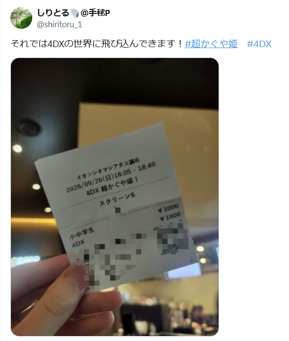
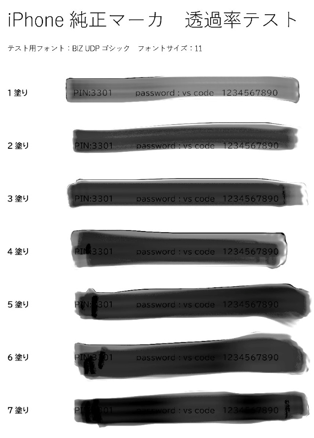
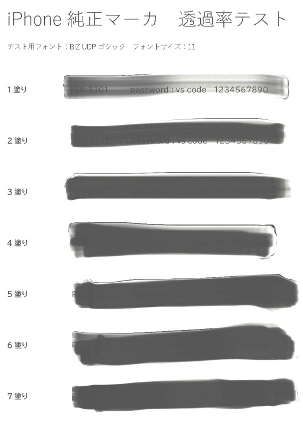

以前からTwitter上で人に見せたくない情報の部分をぼかして公開しているツイートが見受けられます。例えばこんな感じのやつですね。

これがなぜぼかされているかというと、このチケットの左下には予約番号などが書いておりそこを公開すると、予約した人の名前などが割り出されてしまう可能性があるからです。
そのため同じようにQRコードにもモザイクをかけています。このぼかしの方法以外として、iPhoneの標準の写真アプリに搭載されているマーカーを使用した投稿があります。今回はそのマーカーの安全性について考えていこうと思います。
iPhoneの「マーカー」は本当に安全？
このマーカーは写真で重要な部分に線を引いて強調したりする役割があります。しかしこのマーカーはあくまで強調するだけの役割です。
そのため、明るさを上げると文字が見えてしまうことがあります。下の画像のようにマーカーで書いた画像は明るさを上げたり、特定の編集をすることでそのマーカーの文字の下にある文字を透かした見ることができます。

左側に書いてある〇塗りというのはマーカーでどれだけ重ね塗りをしたというのかを表しています。左側がマーカーで塗った元画像。右側が編集を重ねた画像です。
右側にあるマーカーの文字がすべて見えていて
「PIN:3301 password：vscode 1234567890」という文字列がはっきり見えています。
インターネット上に投稿した画像では？
しかし一度インターネット上に出した画像にはサーバの容量削減などを理由に投稿された画像に対して軽量化処理を基本的に行います。
それによってこの明るさを上げる編集が意味をなさいなくなることがあります。
見てみましょう。

これが一度Twitterに投稿し、それを再びダウンロードを行い同じように編集したものです。
1塗り、2塗りでは文字が識別できますが、それ以降は識別できません。
これはTwitterが自動で画像の圧縮化を行っているからです。
まとめ
そのため基本的には安全と考えてよいでしょう。
ここまで読んでくれてありがとう！